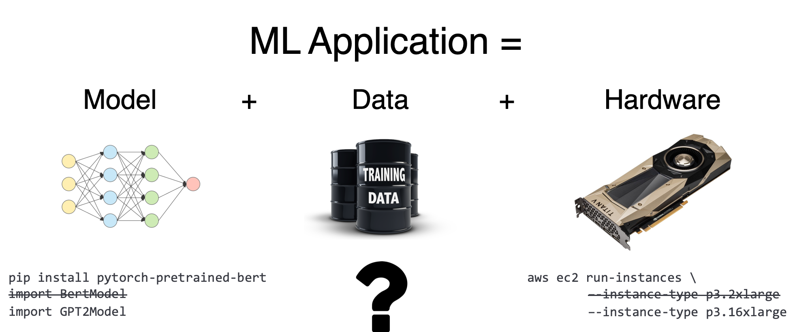
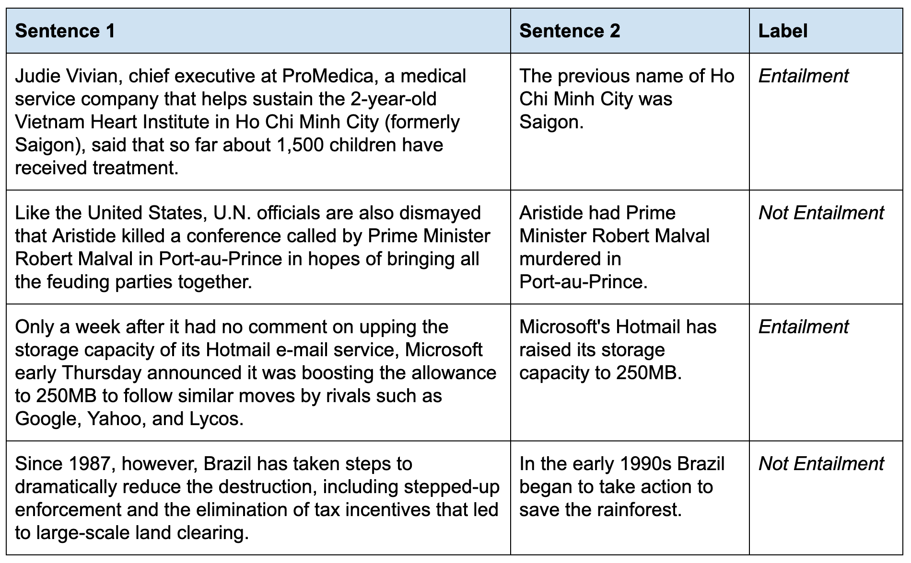

不知道大家有没有这样的疑惑，在BERT横空出世之后，NLP算法工程师的工作开始变得越来越无聊了，想要用Train-from-Scratch的模型战胜芝麻街家族，几乎已无可能，往往绞尽脑汁可能还不如BERT加一个输出层Fine-Tune。那么，既然迁移学习的大势无法阻挡，作为算法工程师的我们如何能在BERT后时代里找到新的乐趣呢？
瓦砾最近读到了一篇不错的博客：https://dawn.cs.stanford.edu/2019/03/22/glue/，从“信号”的角度分析了后BERT时代Fine-Tune模型时的发力点，颇有启发，故此翻译总结并分享。
Let’s do it。
机器学习的三个要素
当解决一个NLP监督学习任务时，我们需要考虑三个要素：
- 模型
- 硬件，也就是计算资源
- 数据
其中，由于Google，Huggingface等大佬的开源贡献，想构建SOTA模型几乎只需要pip install xxx便唾手可得；加上各种云服务的诞生，算力也并不是很大的问题；然而，NLP领域中，高质量的监督数据，仍然是处于一种 low-resource 的状态，这也成为了大多数应用场景的瓶颈，所以，NLPer们开始寻找一些迂回的方式“围魏救赵”，给他们的模型注入一些间接的监督信号。

因此，我们想要搭建一套以监督信号为王的框架，使其能更好地利用如今潜在的一些监督信号，包括：传统的监督、迁移学习、多任务学习、弱监督等。我们称之为Massive Multi-Task Learning (MMTL)。我们以RTE（Recognizing Textual Entailment）任务为例，展示了如何通过逐渐增加“信号”，一步步地提高模型的表现。
RTE是一个经典的NLI任务，一共有2.5k个训练数据，任务的目标是判断第二个句子是否由第一个句子推断而来，数据量不大很符合我们实际的应用场景。

瓦砾在这用高考举例，带着读者walk through一遍给模型寻找信号的过程！
做俩例题：传统的监督
传统监督信号当然不能落下，这就好像高考前得做些例题，刷点“五三”一样。“老师，我还能刷两本黄冈！”
使用标准的Bi-LSTM训练，在该任务上能获得57.4的准确率，只比随机高了一点，即使我们加上ElMo embedding和注意力机制，也只能将分数提高到58.9。很不幸，无论我们的模型结构有多么的fancy，从2.5k监督信号中，That’s all we can learn。
我们需要更多信号！💪
读万卷书：迁移学习
迁移学习就好比读书，一个只读过几篇满分作文的考生是写不出《杯中窥人》的，要想“作文”写的好，先得大量地阅读，即使不甚相关，也是一种积累，厚积才能薄发。
2018年被称为“NLP的ImageNet时刻”，因为这是迁移学习真正起飞，给NLP界带来飞速提升的一年。我们所熟知的ULMFit，GPT以及拥有三亿参数量的BERT在这一年大放异彩。这些模型都是用一些语言模型任务，佐以大量的数据训练而成，因此学习过更多更广泛的信号，在下游任务中游刃有余，鲁棒而又有效。
在实验中，我们使用简单的BERT上加一个线性变换来Fine-Tune RTE数据集，对比Baseline的58.9的得分，立即飙升了17.6的点，来到了76.5。虽然RTE数据量很小，但由于模型已经“看过山和大海，穿越过人山人海”，简单推理任务已经是一点就通，举一反三了。
我们又需要更多信号！💪
九门功课同步学：多任务学习
作为目标清北的高考考生，怎能偏科？更何况数理化不分家，政史地生相互裨益。偏科？不，你只是过拟合了同学。
语言模型可以教会模型很多东西，但教不会它所有，比如做RTE任务，我们可以找一些类似的NLI任务，用multi-task learning的方式同步去学习。
Multi-Task Learning（MTL）是一种共享表达层，分离输出层从而去学习不同任务信号的学习方法。因为我们相信，重要的是“信号”，而不是模型结构，我们在BERT的基础上为每个任务只添加一个线性变换。我们使用MT-DNN中的训练方法：每个batch只包含一个任务，多任务之后再单独在各个任务上Fine-Tune一下。最终，RTE再次提高了6.9个百分点，达到了83.4的高分。
我们又双需要更多信号！💪
开个小灶：大量多任务学习
高考路遥遥，不仅需要低头赶路，也得抬头看看天，问自己：“我哪里还不够优秀呢？” 有的放矢，做到哪里不会点哪里。
日常实验或业务中，Error Analysis是一个很重要的针对性地提高模型表现的方法，发个比方：当你发现Badcase大多来自于对文本语法的理解错误，就可以考虑增加一个句法解析的辅助任务；又或是，当你发现文本中存在诸多指代，则可尝试增加一个指代消解的辅助任务。需要的label则可以用开源的系统去生成，不可避免这样会引入一些错误，但模型依然还是可以利用这些信号，去针对性地补全缺失的能力。
我们又双叒需要更多信号！💪
整理错题集：数据切分
在哪里跌倒，就得在哪里爬起来。做了错题不要紧，准备一本错题集，记录下来，分而治之，就怼它，死磕它。
在实验中，我们发现在RTE数据集中，有一些特殊的数据子集表现很差，比如：当我们的模型获得了83.4的准确率时，它在有罕见标点的数据中表现仅有76.7，在代词较多的数据中仅有58.3，这意味着，这些问题确实难，容易错。
面对上述的这两类问题，我们用一些规则识别出这类问题后，单独增加一个线性输出层去解决它，表达层仍是共享的，使得一小部分网络专注于解决这类问题，从而提高这部分数据的表现。用了这个方法，76.7提高至79.3，58.3提高至75.0，最终总得分达到84.1。赞。
我们又双叒叕需要更多信号！💪
九九归一：Ensembling
高考的至高境界：人格分裂去高考，九人同行，一人高中。在每一门科目中，派出你不同的人格去高考，考语文时，你是张爱玲；考数学时，你是高斯；考英语时，你是韩梅梅。
Ensemble是大家的老朋友了，在后BERT时代，Ensemble也尤其重要，比如Cased和Uncased的模型，常常就擅长不同的任务，毕竟，三个臭皮匠，顶个诸葛亮；三个诸葛亮，顶九个臭皮匠。
打个总结
其中本文的“干货”并没有那么多，更多地是一种思想和方法论，即：监督信号要重要于模型结构的些微调整，背后其实是算力与算法的权衡。瓦砾认为，这个观点在bert时代尤为适用。当然，并不是否定算法的作用，而是认为算法和算力应当互相补充，这里引用XLNet作者杨植麟的一段采访时说的话：
依靠算力解决问题是当前研究 AI 的王道：让计算机去做它的强项——计算；如果算力解决不了的问题，再用算法去做。
把算力推到极致的好处是知晓当前算法的边界，避免在算力可以解决的问题上做一些不必要的算法创新，让大家关注最重要的研究问题。但同时大算力带来的弊端是提升了研究门槛，比如一般的学校和实验室可能没有资源做预训练。这个问题我觉得短时间内要通过不同的分工来解决，资源多的研究者利用资源做大算力研究，资源少的研究者做基于小算力的研究。
至此，我们的“信号”寻找之旅告一段落啦，但百尺竿头更进一步，各位NLPer们继续加油，去寻找那些浩瀚星辰中未被发现的“信号”吧。
PS：写这篇博客真的是激起了瓦砾无数关于高考的回忆，其实，往往机器学习中很多的 Intuition 都是可以从生活中来的。最后，大家不要因为我这篇鸡汤写的多就取关啊。Orz。